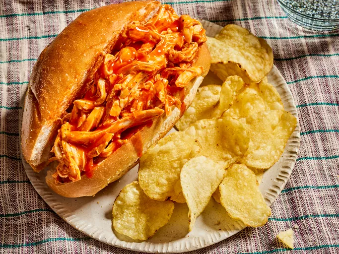

Buffalo Chicken Sandwich Recipe

Description
The Buffalo Chicken Sandwich is full of a tangy spicy flavor sure to bring pleasure to the taste buds.
- 4 skinless, boneless chicken breast halves
- 1 (17.5 fluid ounce) bottle Buffalo wing sauce, divided
- 1/2 (1 ounce) package dry ranch salad dressing mix
- 2 tablespoons butter
- 6 hoagie rolls, split lengthwise
- Gather all ingredients
- Place chicken breasts into the slow cooker; pour in 3/4 of the wing sauce and ranch dressing mix.
- Cover and cook on Low for 6 to 7 hours.
- Shred chicken in the cooker with two forks. Stir in butter.
- Pile shredded chicken and sauce onto hoagie rolls. Serve with remaining Buffalo sauce.
- Serve and enjoy!